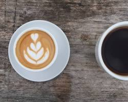
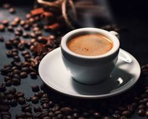

Menu Card
Espresso-Based Drinks
Espresso - A strong shot of coffee made by forcing hot water through finely-ground coffee beans.
Americano - Espresso diluted with hot water for a milder coffee taste.
Latte - Espresso with steamed milk and a thin layer of milk foam on top.

Coffee
Breve - Coffee made with half-and-half instead of milk.
Caffe Latte - See Latte
Filter Coffee - Coffee brewed by pouring hot water over coffee grounds placed in a filter.
Drip Coffee - See Filter Coffee
Americano - See Espresso-Based Drinks
